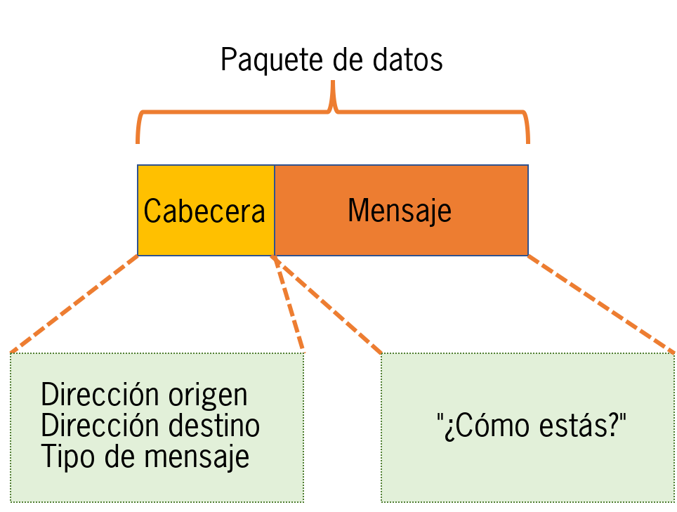
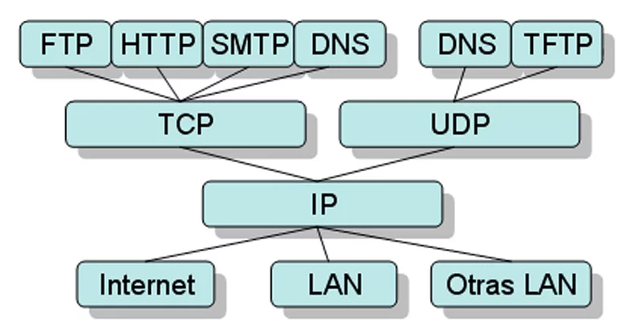

4.3 Funcionamiento de Internet
Para entender cómo funciona Internet, debemos entender qué es una red. Una red es un grupo de ordenadores conectados que pueden enviarse datos entre sí.
Pues Internet es una enorme y extensa colección de redes que se conectan entre sí. Inter (interconectadas) net (redes).
Los ordenadores se conectan entre sí dentro de las redes y estas redes también se conectan entre sí, permitiendo que un ordenador se comunique con otro en una red lejana. Esto posibilita el intercambio rápido de información entre dispositivos de todo el mundo.
Además, los ordenadores se conectan a Internet mediante cables, ondas de radio y otros medios. Todos los datos se convierten en pulsos de luz (bits) que se transmiten a la velocidad de la luz. Cuantos más bits se puedan transmitir simultáneamente, mayor será la velocidad de Internet.
Paquetes
En la red, un paquete es un pequeño segmento de un mensaje más grande. Cada paquete contiene datos e información de esos datos. La información sobre el contenido del paquete se conoce como “cabecera”, y va al principio del paquete para que la máquina receptora sepa qué hacer con él. Cuando los datos se envían por Internet, se dividen primero en paquetes más pequeños, que luego se traducen en bits. Los paquetes se envían a su destino mediante enrutadores y conmutadores. Cuando los paquetes llegan a su destino, el dispositivo receptor vuelve a juntar los paquetes en orden y entonces puede utilizar o mostrar dichos datos.
Protocolos
Conectar dos ordenadores fue uno de los principales retos que tuvieron que resolver los creadores de Internet. Requiere el uso de técnicas de comunicación que puedan entender todos los ordenadores conectados. Esto mismo pasa con dos personas de diferentes países; necesitan hablar un idioma común para poder entenderse. Este problema se soluciona con protocolos estandarizados. En las redes, un protocolo es una forma estandarizada de realizar determinadas acciones y de dar formato a los datos para que dos o más dispositivos puedan comunicarse y entenderse entre sí. Existen protocolos para casi todo
Ejemplos de estos protocolos son:
- Ethernet: Envía paquetes dentro de la misma red.
- IP: Permite que los paquetes viajen entre redes.
- TCP: Garantiza que los paquetes lleguen completos y en orden.
- HTTP: Da formato a los datos para sitios web y aplicaciones.
También existen protocolos para enrutamiento, pruebas, encriptación y alternativas como UDP para la transmisión de video. Gracias a estos protocolos, cualquier dispositivo puede conectarse y comunicarse en Internet.
